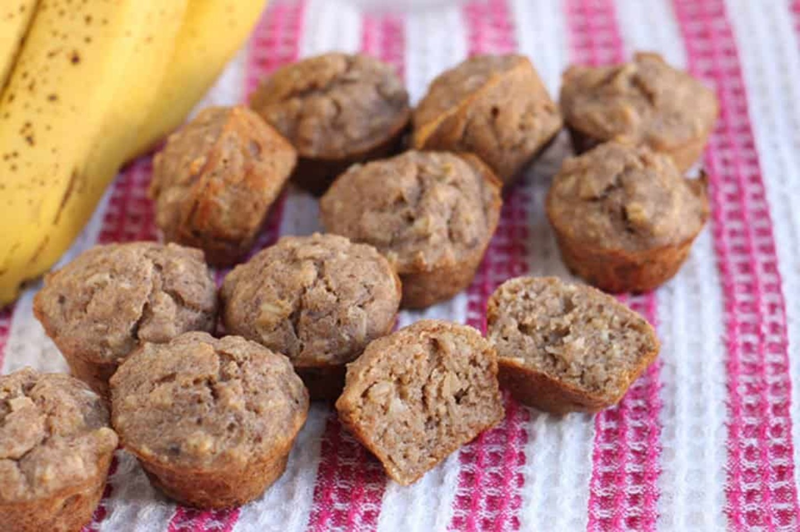
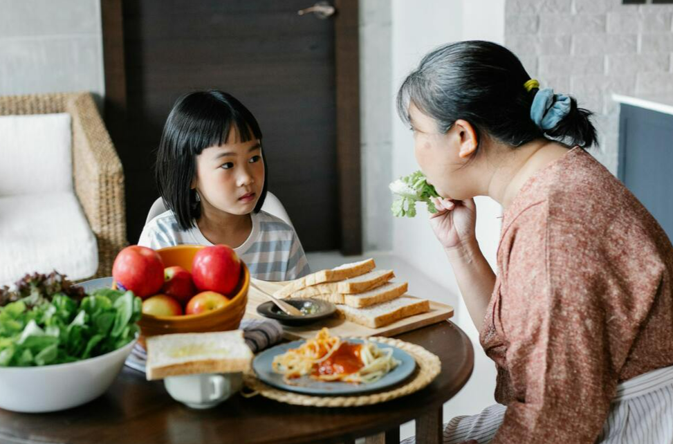

Overview
Purpose
At Baby Bytes, we understand the challenges that come with introducing solid foods and establishing healthy eating habits for little ones. That's why our team of experts is committed to curating a diverse range of recipes that are not only nutritious but also easy on the pocket. We believe that every parent deserves access to affordable yet wholesome meal options for their growing children.
Audience
New Parents, expecting parents, anyone feeding children
Branding
Website Logo
Style Guide
Color Palette
| Primary | Secondary | Accent 1 | Accent 2 |
|---|---|---|---|
Typography
Heading Font: Bitter
Paragraph Font: Roboto
Normal paragraph example
We believe that good nutrition is the cornerstone of a child's healthy development, and our mission is to empower parents with the knowledge and tools they need to nourish their little ones from the very beginning. Join us at Baby Bytes, where we're dedicated to nourishing parenthood, one bite at a time.
Colored paragraph example
Whether it's introducing first foods, navigating picky eating phases, or exploring exciting culinary adventures for toddlers, Baby Bytes is here to support parents every step of the way
Navigation
Site Map
Content
Home page
People who are looking to help their children stay happy and healthy all while staying under a budget will be introuced to the site by seeing our some of our recently added recipes. They will be able to get a good visual representation of the food as well as a rough breakdown on the price per serving of the meal. When they scroll down they will see a few links to pages where they can get specific recipies and feeding tips for various ages. They will also get a brief mission statement for our webpage as well as link to our social media and contact info.
Images for the Home page

[Page 2]
This will be an example of one of the many recipies you can find on the website. It will have a picture of the food being made, some nutrition information about the food a list of ingredent and intruction on how to make the food.
Images for the Page 2
[Page 3]
This will be a breif informational section people can go to get feeding tips for thier kid depending on the age of the child. itll list information on what different studies have shown and some examples of foods kids liek at that age. It will also have a few pictures of kids around the age that they are looking up.
Images for the Page 3
Wireframes
Create three wireframes for your site. One for each page and list them here
Home
[Any additional details about home that the wireframe does not make clear]
Recipes
[Any additional details about page 2 that the wireframe does not make clear]
Feeding Tips
[Any additional details about page 3 that the wireframe does not make clear]